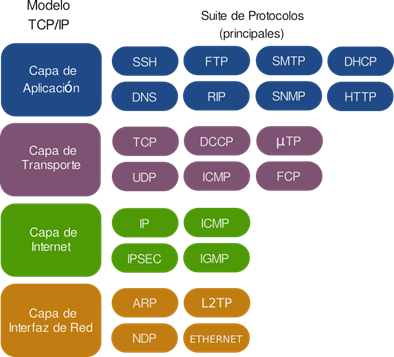

En la actualidad, la tecnología se ha convertido en una herramienta indispensable para el funcionamiento de diversos sectores de la sociedad, desde el ámbito empresarial hasta el educativo, pasando por el entretenimiento y las relaciones humanas. Dentro de esta revolución tecnológica, uno de los elementos más importantes son los protocolos de red, los cuales permiten que los dispositivos se comuniquen entre sí y se intercambien información de manera efectiva.
Un protocolo de red, en términos simples, es un conjunto de reglas y procedimientos que permiten la transmisión de datos entre dispositivos en una red de comunicaciones. Los protocolos establecen cómo se deben enviar y recibir los datos, y cómo se deben interpretar para asegurar que dispositivos de diferentes fabricantes y con diferentes sistemas operativos puedan comunicarse entre sí.
Existen varios tipos de protocolos de red, cada uno con un propósito específico. Uno de los protocolos más conocidos es el Protocolo de Transferencia de Hipertexto (HTTP), que se utiliza para acceder a páginas web y transferir información a través de la World Wide Web. Otro protocolo popular es el Protocolo de Correo Simple (SMTP), que se utiliza para enviar y recibir correo electrónico.
Además de estos protocolos, existen otros que se utilizan en diferentes contextos, como el Protocolo de Control de Transmisión (TCP), el Protocolo de Internet (IP), el Protocolo de Transferencia de Archivos (FTP), el Protocolo de Red de Área Local (LAN) y el Protocolo de Red de Área Amplia (WAN), entre otros.
El Protocolo de Control de Transmisión (TCP) es un protocolo de capa de transporte que se utiliza para asegurarse de que los datos se transmitan de manera confiable y sin errores entre dispositivos en una red. TCP divide los datos en paquetes pequeños y los envía de manera secuencial, garantizando que la información se transmita de manera eficiente y sin retrasos.
El Protocolo de Internet (IP), por su parte, es un protocolo de capa de red que se utiliza para enrutar los paquetes de datos a través de la red. IP es responsable de asignar direcciones IP únicas a cada dispositivo conectado a una red y de planificar la ruta que los paquetes deben seguir para llegar a su destino.
El Protocolo de Transferencia de Archivos (FTP) es un protocolo utilizado para transferir archivos entre dispositivos en una red. FTP funciona mediante el envío de comandos y respuestas para identificar al usuario, conectar con el servidor y transferir archivos.
El Protocolo de Red de Área Local (LAN) es utilizado para la comunicación entre dispositivos en una red de área local, como una red de computadoras de una empresa o institución educativa. El protocolo permite el intercambio de datos entre los dispositivos conectados a la red, como computadoras, impresoras y dispositivos móviles.
El Protocolo de Red de Área Amplia (WAN), en cambio, se utiliza para la comunicación entre dispositivos en redes geográficamente dispersas, como las redes de telecomunicaciones. WAN permite la transmisión de datos a través de diferentes tipos de medios, como líneas telefónicas, cables de fibra óptica y satélites.
Los protocolos de red son esenciales para la comunicación efectiva entre dispositivos en una red de comunicaciones. Sin ellos, la transmisión de datos sería imposible o extremadamente ineficiente, lo que afectaría gravemente la capacidad de las empresas y organizaciones para llevar a cabo sus actividades.
Además, los protocolos de red también son cruciales para la seguridad de la información. Al establecer reglas claras para la comunicación entre dispositivos, los protocolos ayudan a prevenir los ataques cibernéticos y las vulnerabilidades en la red.
Por ejemplo, el Protocolo de Seguridad de la Capa de Transporte (TLS) es un protocolo de seguridad utilizado para establecer conexiones seguras a través de internet. TLS cifra los datos enviados entre dispositivos para protegerlos de los hackers y asegurar la integridad de la información.
En definitiva, los protocolos de red son un elemento fundamental de la tecnología moderna. Permiten la comunicación efectiva entre dispositivos, garantizan la seguridad de la información y hacen posible la transmisión de datos a través de las redes. Como la tecnología sigue evolucionando, es probable que surjan nuevos protocolos de red para adaptarse a las necesidades cambiantes de la sociedad. De esta manera, se puede asegurar una comunicación efectiva de datos y una mayor eficiencia en la gestión de redes de comunicación.